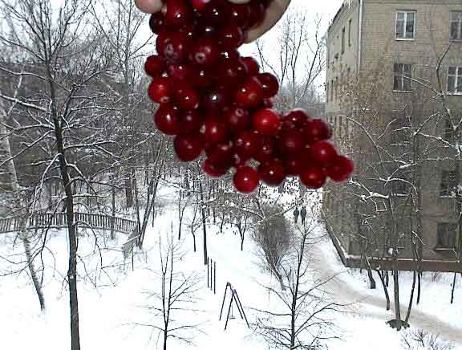
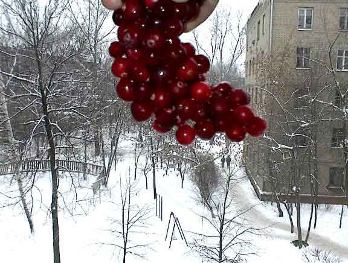

Замороженная клюква
На фоне окна сфотографированы ягоды клюквы. Ягоды примёрзли друг к другу, и получилась похоже на кисть винограда. Будем считать, что натюрморт,.. или пейзаж?

На фоне окна сфотографированы ягоды клюквы. Ягоды примёрзли друг к другу, и получилась похоже на кисть винограда. Будем считать, что натюрморт,.. или пейзаж?